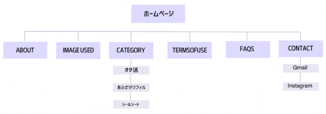

サイトは欲しいリフィルがすぐに見つけられるように、シンプルであまり装飾しないようにした
リフィルも自分でペンやシールでアレンジしやすいように、色は使わずモノクロでデコレーションのベースになるようなものにした
SYMBOLMARK & LOGOTYPE
ロゴタイプだけだと堅苦しく面白味もなかったので、どんなものだろうと興味を持ってもらうためにシンボルマークを作成することにした
「pen」とペンギンんをかけてシンボルマークはペンギンにした。プランは英語で「planner」なので2つを合わせて「Pen Plan」という名前にした
またロゴタイプのフォントは「Bukhari Script」を使用している。平仮名の方は自分で作字した
WIRE FRAME
SITE MAP
